Fourierrekke fra funksjon
Dette er funksjonen som skal gjøres om til en fourierrekke. T er perioden til funksjonen.
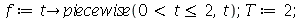
| 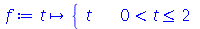 | |
| 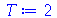 | (1) |
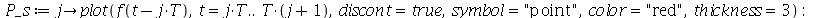
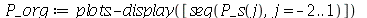
| 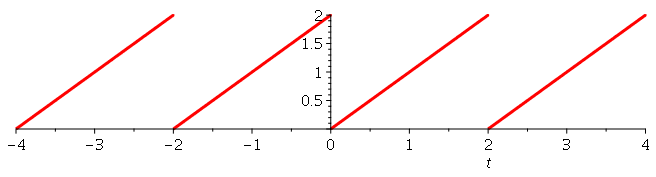 |
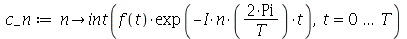
| 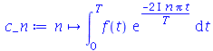 | (2) |
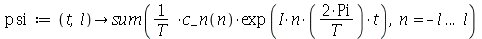
| 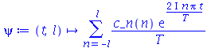 | (3) |
Her regner vi ut fourierrekken til f(t) (1) med l antall ledd.
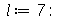
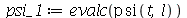
| 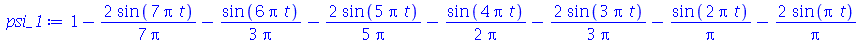 | (4) |
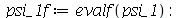
Her plottes fourierrekken (3), vist her i blått, med l antall ledd og orginalfunksjonen f(t) (1), vist her i rødt. I tillegg er det tegnet opp hver fourierrekke med færre ledd enn rekken (3) vi regnet ut. Slik kan vi se hvordan flere ledd endrer på rekke. Disse er grønne.
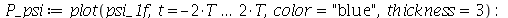
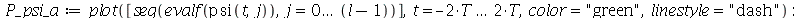
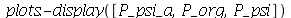
| 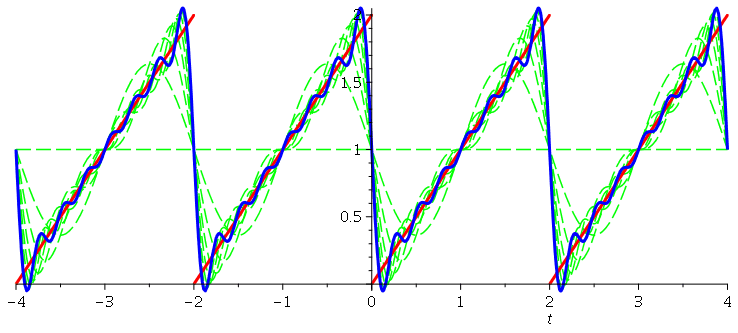 |